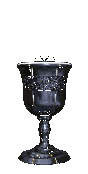
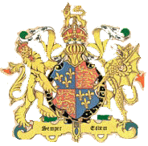
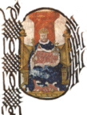

|  |
Edward FOX (Bishop of Hereford) |
Born: ABT 1496
Died: 8 May 1538
Buried: St. Mary Mounthaw, London, England
On his return Fox was elected provost of King's College, and in Aug 1529 was the means of conveying to the king Thomas Cranmer's historic advice that he should apply to the universities of Europe rather than to the Pope. This introduction led eventually to Cranmer's promotion over Fox's head to the archbishopric of Canterbury. After a brief mission to Paris in Oct 1529, Fox in Jan 1530 befriended Hugh Latimer at Cambridge and took an active part in persuading the English universities to decide in the King's favour. He was sent to employ similar methods of persuasion at the French universities in 1530-1531, and was also engaged in negotiating a closer league between England and France. In Apr 1533 he was prolocutor of convocation when it decided against the validity of Henry's marriage with Catherine, and in 1534 published his treatise De vera differentia regiae potestatis et ecclesiae (second ed. 1538, English transl 1548).
Various ecclesiastical preferments were granted to him, including the archdeaconry of Leicester (1531), the deanery of Salisbury (1533) and the bishopric of Hereford (1535). In 1535-1536 he was sent with Nicholas Heath to Germany to discuss the basis of a political and theological understanding with the Lutheran princes and divines, and had several interviews with Martin Luther, who could not be persuaded of the justice of Henry VIII's divorce. The principal result of the mission was the Wittenberg articles of 1536, which had no slight influence on the English Ten Articles of the same year. In 1536, Bucer dedicated to him his Commentaries on the Gospels, and Fox's Protestantism was also illustrated by his patronage of Alexander Ales, whom he defended before Convocation.
Fox is credited with the authorship of several proverbial sayings, such as 'the surest way to peace is a constant preparedness for war' and 'time and I will challenge any two in the world'. The former at any rate is only a variation of the Latin 'si vis pacem, para bellum', and probably the latter is not more original in Fox than in Felipe II of Spain, to whom it is usually ascribed. Fox was buried in the church of St Mary Mounthaw, London. He was the most Lutheran of Henry VIII's bishops, and was largely responsible for the Ten Articles of 1536.
|  to Bios Page |  to Home Page |